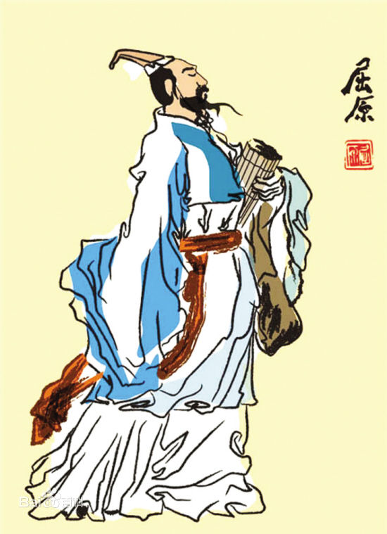
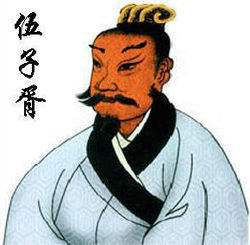
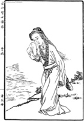
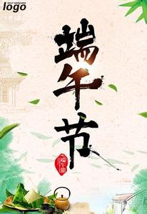

- 端午节的由来主要有三种说法
- 端午节的第一种说法是为纪念历史上伟大的诗人屈原
- 这种说法在全国流传很广，老百姓也最为认可。屈原是战国时代的楚国人，官至左徒、三闾大夫等。屈原为人正直，忧国忧民，一心致力于国家的变法图强，但是却屡屡遭受小人的谗言攻击和迫害，再加上楚怀王昏庸无道，不辨忠奸，满怀忠君爱民热忱的屈原被疏远了、被放逐了，最终在悲愤绝望中于五月初五投汨罗江而死。人们为了纪念他才有了端午节，才有了吃粽子、赛龙舟等习俗。此版本为最为人接受的版本。
- 端午节的第二种说法是为了纪念伍子胥
- 伍子胥名员，楚国人，父兄均被无道的楚平王所冤杀，后来伍子胥逃到吴国，帮助吴国富国强兵，并且助吴伐楚，五战而攻入楚国首都郢城。当时楚平王已死，伍子胥掘其墓，鞭其尸三百，以报父兄被屈杀之仇。吴王阖闾死后，其子夫差继位，吴国更加强大，攻打越国，一举取得胜利，越王勾践请和，夫差许之。此时的吴王夫差已经被胜利冲昏了头脑，开始骄傲自大起来，听不进逆耳忠言。伍子胥建议他彻底消灭越国，以绝后患，夫差非但不听，反而轻信陷害伍子胥的谗言，逼迫伍子胥自尽。伍子胥临死前对邻舍人说：“我死后，将我眼睛挖出悬挂在吴京之东门上，以看越国军队入城灭吴。”随后便拔剑自刎。夫差得知此言大怒，令人将伍子胥的尸体装在皮革里，于五月五日投入大江中，因此相传端午节也是纪念伍子胥的日子。
- 端午节的第三种说法是为了纪念东汉孝女曹娥
- 曹娥是东汉上虞人，父亲溺水亡于江中，打捞数日也找不到尸体，当时孝女曹娥年仅十四岁，她悲痛欲绝，昼夜沿江号哭。过了十七天，就在五月初五这一天也投江了，五日后抱着父亲的尸体，浮出水面。曹娥的孝行感天动地，在民间广为流传，当时的文人墨客纷纷作诔辞颂扬曹娥投江寻父的孝行。孝女曹娥之墓，后人为纪念曹娥的孝节，在曹娥投江之处兴建曹娥庙，她所居住的村镇改名为曹娥镇，曹娥殉父之江更名为曹娥江，而人们也就在曹娥投江寻父的五月初五这一天来祭奠她。